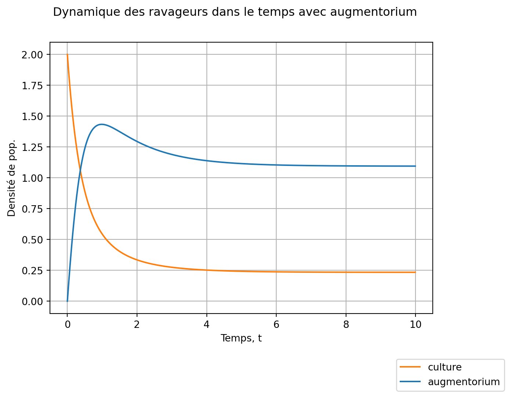
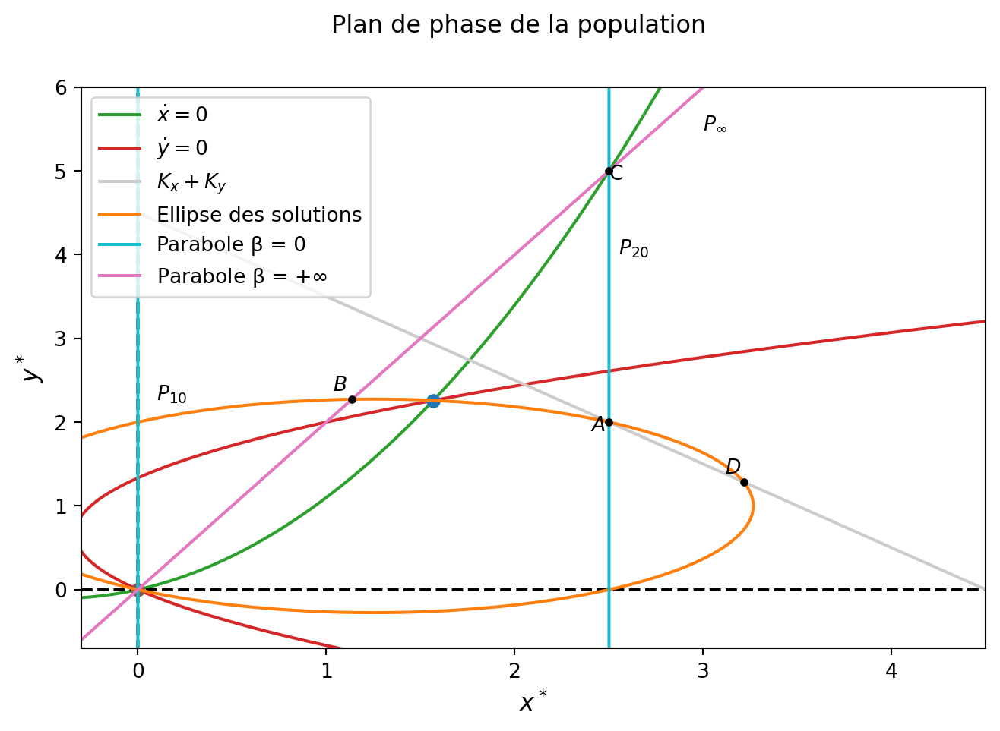
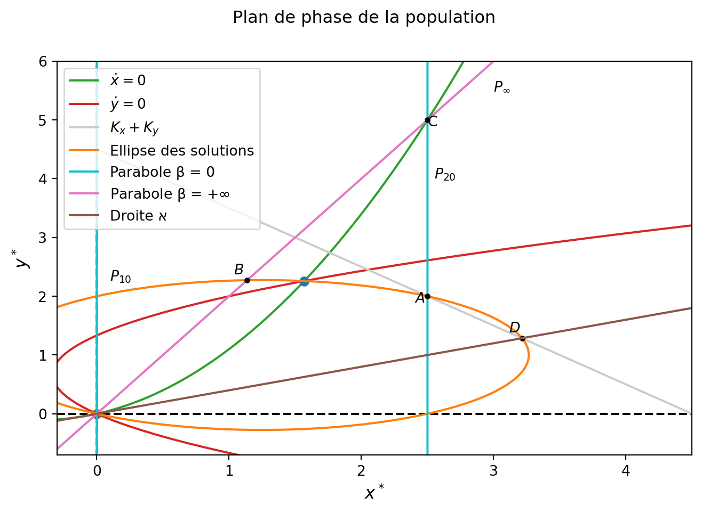
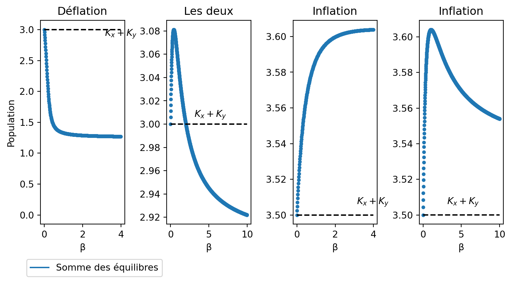
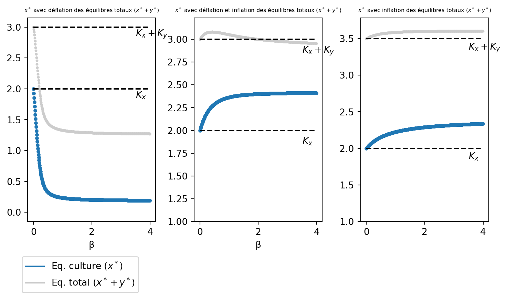
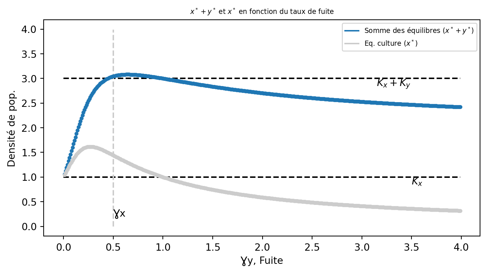

Code
import numpy as np
import matplotlib.pyplot as plt
from scipy.integrate import odeintModules à importer :
import numpy as np
import matplotlib.pyplot as plt
from scipy.integrate import odeintLe but d’un augmentorium est de confiner les ravageurs dans un espace clos qui ne laisse pas (ou peu) s’échapper ceux-ci.
Ainsi, il s’établit une migration asymétrique entre les deux structures que nous pouvons modéliser en établissant le modèle suivant d’après Arditi R. (2018) :
\left\{\begin{array}{l} \dot x = r_xx(1-\frac{x}{K_x})+\beta\left(\frac{y}{\gamma_y}-\frac{x}{\gamma_x}\right)\\ \dot y = r_yy(1-\frac{y}{K_y})+\beta\left(\frac{x}{\gamma_x}-\frac{y}{\gamma_y}\right) \end{array}\right. \tag{1}
avec :
- x la population de ravageurs dans la culture,
- y la population de ravageurs dans l’augmentorium,
- r_x et r_y le taux de croissance dans la culture et dans l’augmentorium,
- K_x et K_y les capacités de charges de la culture de de l’augmentorium,
- \beta la force de migration entre les structures,
- \gamma_x et \gamma_y caractérisant l’asymétrie de migration.
Ce modèle est plus proche de celui d’un augmentorium.
Comme les ravageurs se reproduisent mieux dans l’augmentorium que dans la culture nous pouvons dire que r_x<r_y.
Nous pouvons aussi dire que le taux de fuite des ravageurs (\frac{1}{\gamma_y}) se doit d’être beaucoup plus petit que le taux de migration (\frac{1}{\gamma_x}).
Nous avons donc \gamma_x << \gamma_y.
Encore une fois nous simulons la dynamique des deux populations en fonction du temps en codant comme dans la première partie
Nous définissons le système sous Python:
def aug(etat, t, param):
rx, ry, Kx, Ky, b, gx, gy = param
x, y = etat
s=[rx * x * (1 - x/Kx) + b * (y/gy - x/gx),
ry * y * (1 - y/Ky) + b * (x/gx - y/gy)]
return sEt nous définissons les paramètres, le temps d’intégration etc. :
# Temps d'intégration:
ti = np.arange(0, 10, 0.01)
# Etats initiaux:
x0 = 2
y0 = 0
e0 = [x0, y0]
# Paramètres:
rx = 0.5
ry = 1
Kx = 2
Ky = 1
b = 1
gx = 0.5
gy = 3
param_aug = np.array([rx, ry, Kx, Ky, b, gx, gy])
# Simulation:
s = odeint(aug, e0, ti, args = (param_aug, ))Nous traçons la figure :
fig,ax = plt.subplots(1, 1)
fig.suptitle('Dynamique des ravageurs dans le temps avec augmentorium')
ax.plot(ti, s[ :, 0], color = 'C1', label = 'culture')
ax.plot(ti, s[ :, 1], color = 'C0', label = 'augmentorium')
# Ajout d'élements:
ax.grid()
ax.legend(bbox_to_anchor = (0.7, -0.65, 0.5, 0.5))
ax.set_xlabel('Temps, t');
ax.set_ylabel('Densité de pop.');
Cette dynamique, comme en première partie, présente un équilibre de maintien de la population.
Néanmoins nous observons que, pour les mêmes paramètres que dans la première partie, la population dans la culture est bien plus faible.
La migration asymétrique vers l’augmentorium semble être bénéfique à la culture.
A l’équilibre nous avons le système suivant :
\left\{\begin{array}{l} \dot x = 0 \Leftrightarrow 0 = r_xx(1-\frac{x}{K_x})+\beta\left(\frac{y}{\gamma_y}-\frac{x}{\gamma_x}\right)\\ \dot y = 0 \Leftrightarrow 0 = r_yy(1-\frac{y}{K_y})+\beta\left(\frac{x}{\gamma_x}-\frac{y}{\gamma_y}\right) \end{array}\right. \tag{2} \Leftrightarrow \left\{\begin{array}{l} y^*=\gamma_y\left(\frac{x}{\gamma_x}-\frac{r_xx}{\beta}\left(1-\frac{x}{K_x}\right)\right)\\ x^*=\gamma_x\left(\frac{y}{\gamma_y}-\frac{r_yy}{\beta}\left(1-\frac{y}{K_y}\right)\right) \end{array}\right. \tag{3}
Nous voyons tout de suite que nous avons deux paraboles qui se croisent en (0,0) et en (x^*,y^*).
Nous allons donc avoir deux équilibres, ceux-ci vivent sur une ellipse de même équation qu’en première partie.
En fonction des racines des paraboles nous allons avoir des plans de phases différents que nous allons tracer via les mêmes techniques qu’en première partie :
#Nous créons la figure avec les 3 sous figures:
fig2, (ax2, ax3, ax4) = plt.subplots(1, 3, figsize = (9, 4))
fig2.suptitle('Plan de phase de la population')
ax2.set_title('β=1')
ax3.set_title('β=10')
ax4.set_title('β=0.1')
#Plan de phase 1:#
# Paramètres:
rx1 = 0.5
ry1 = 1
Kx1 = 2
Ky1 = 1
b1 = 1
gx1 = 0.5
gy1 = 3
param_aug1 = np.array([rx1, ry1, Kx1, Ky1, b1, gx1, gy1])
# Isocline nulles:
xt = np.arange(-10, 10, 0.01)
yt = np.arange(-10, 10, 0.01)
#xdot = 0
ax2.plot(xt, gy1 * (xt/gx1 - rx1 * xt/b1 * (1 - xt/Kx1)), color = 'C2', label = '$\dot x=0$')
ax2.plot(np.zeros_like(xt), xt, color = 'k', markersize = 6)
#ydot = 0
ax2.plot(gx1 * (yt/gy1 - ry1 * yt/b1 * (1 - yt/Ky1)), yt, color = 'C3', label = '$\dot y=0$')
ax2.plot(xt, np.zeros_like(xt), color = 'k', markersize = 6)
#Illustration de la figure:
ax2.set_xlim(left = -0.03, right = 0.5)
ax2.set_ylim(top = 1.5, bottom = -0.06)
ax2.set_xlabel('Ravageur dans la culture', fontsize = '12');
ax2.set_ylabel('Ravageur dans l\'augmentorium', fontsize = '12');
#Ajout du champ de vecteur
xg = np.arange(-0.5, 3, 0.08)
yg = np.arange(-0.5, 3, 0.08)
X, Y = np.meshgrid(xg, yg)
#Nous utilisons quiver:
dx, dy = aug([X, Y], 0, param_aug1)
ax2.quiver(X, Y, dx, dy, angles = 'xy', color = 'grey', scale = 15, width = 0.0035);
#Plan de phase 2:#
#Paramètres:
rx2 = 0.5
ry2 = 1
Kx2 = 2
Ky2 = 1
b2 = 10
gx2 = 0.5
gy2 = 3
param_aug2 = np.array([rx2, ry2, Kx2, Ky2, b2, gx2, gy2])
#Isocline nulles:
#xdot = 0
ax3.plot(xt, gy2 * (xt/gx2 - rx2 * xt/b2 * (1 - xt/Kx2)), color = 'C2', label = '$\dot x=0$')
ax3.plot(np.zeros_like(xt), xt, color = 'k', markersize = 6)
#ydot = 0
ax3.plot(gx2 * (yt/gy2 - ry2 * yt/b2 * (1 - yt/Ky2)), yt, color = 'C3', label = '$\dot y=0$')
ax3.plot(xt, np.zeros_like(xt), color = 'k', markersize = 6)
#Illustration de la figure:
ax3.set_xlim(left = -0.02, right = 0.35)
ax3.set_ylim(top = 1.4, bottom = -0.06)
ax3.set_xlabel('Ravageur dans la culture', fontsize = '12');
#Ajout du champ de vecteur
xg = np.arange(-0.5, 3, 0.08)
yg = np.arange(-0.5, 3, 0.08)
X, Y = np.meshgrid(xg, yg)
#Nous utilisons quiver:
dx, dy = aug([X, Y], 0, param_aug2)
ax3.quiver(X, Y, dx, dy, angles = 'xy', color = 'grey', scale = 40, width = 0.003);
#Plan de phase 3:
#Paramètres:
rx3 = 0.5
ry3 = 1
Kx3 = 2
Ky3 = 1
b3 = 0.1
gx3 = 0.5
gy3 = 3
param_aug3=np.array([rx3, ry3, Kx3, Ky3, b3, gx3, gy3])
#Isocline nulles:
#xdot = 0
ax4.plot(xt, gy3 * (xt/gx3 - rx3 * xt/b3 * (1 - xt/Kx3)), color = 'C2', label = '$\dot x=0$')
ax4.plot(np.zeros_like(xt), xt, color = 'k', markersize = 6)
#ydot = 0
ax4.plot(gx3 * (yt/gy3 - ry3 * yt/b3 * (1 - yt/Ky3)), yt, color = 'C3', label = '$\dot y=0$')
ax4.plot(xt, np.zeros_like(xt), color = 'k', markersize = 6)
#Illustration:
ax4.set_xlim(left = -0.08, right = 1.9)
ax4.set_ylim(top=1.5, bottom = -0.06)
ax4.set_xlabel('Ravageur dans la culture', fontsize = '12');
# Ajout du champ de vecteur
xg = np.arange(-0.5, 3, 0.18)
yg = np.arange(-0.5, 3, 0.18)
X, Y = np.meshgrid(xg, yg)
dx, dy = aug([X, Y], 0, param_aug3)
ax4.quiver(X, Y, dx, dy, angles = 'xy', color = 'grey', scale = 10, width = 0.0035);
#Nous légendons:
ax4.legend();
En fonction des valeurs de \beta nous observons des profils différents de plan de phase. Pour mieux le visualiser nous pourrons utiliser l’animation Geogebra mise à disposition à la fin de l’analyse.
D’après le champ de vecteurs nous voyons clairement que l’équilibre en (0,0) est instable et l’équilibre (x^*,y^*) est stable.
Pour calculer l’équilibre nous procédons de la même manière que dans la première partie, c’est à dire en croisant les deux paraboles \dot x=0 et \dot y =0 :
Nous avons x^*=\gamma_x\left(\frac{y}{\gamma_y}-\frac{r_yy}{\beta}\left(1-\frac{y}{K_y}\right)\right)
Donc : \small y^*=\gamma_y\left(\frac{\gamma_x\left(\frac{y}{\gamma_y}-\frac{r_yy}{\beta}\left(1-\frac{y}{K_y}\right)\right)}{\gamma_x}-\frac{r_x\gamma_x\left(\frac{y}{\gamma_y}-\frac{r_yy}{\beta}\left(1-\frac{y}{K_y}\right)\right)}{\beta}\left[1-\frac{\gamma_x\left(\frac{y}{\gamma_y}-\frac{r_yy}{\beta}\left(1-\frac{y}{K_y}\right)\right)}{K_x}\right]\right) \Leftrightarrow -\frac{r_y\gamma_yy^*}{\beta} + \frac{r_y \gamma_y {y^*}^2}{\beta K_y} - \frac{r_x\gamma_xy^*}{\beta} + \frac{r_xr_y\gamma_x \gamma_y y^*}{\beta^2} \\ - \frac{r_xr_y\gamma_x\gamma_y{y^*}^2}{\beta^2K_y} + \frac{r_x\gamma_x^2{y^*}^2}{\beta K_x\gamma_y} - \frac{r_xr_y\gamma_x^2{y^*}^2}{\beta^2K_x} \\ + 2\frac{r_xr_y\gamma_x^2{y^*}^3}{\beta^2K_xK_y} + \frac{r_xr_y^2\gamma_x^2 \gamma_y {y^*}^2}{\beta^3K_x} - 2\frac{r_xr_y^2\gamma_x^2\gamma_y{y^*}^3}{\beta^3K_xK_y} \\ + \frac{r_xr_y^2\gamma_x^2\gamma_y{y^*}^4}{\beta^3K_xK_y^2} = 0
Ce qui donne, en mettant les monomes y^* en facteur et en simplifiant ensuite par \frac{y^*}{\beta} :
\frac{r_xr_y\gamma_x\gamma_y}{\beta}-\gamma_yr_y-\gamma_xr_x +\\ y^*\left[\frac{r_y\gamma_y}{K_y}-\frac{r_xr_y\gamma_x\gamma_y}{\beta K_y}+ \frac{r_xr_y^2\gamma_x^2\gamma_y}{\beta^2K_x}+\frac{r_x\gamma_x^2}{\gamma_yK_x}-\frac{2r_xr_y\gamma_x^2}{\beta K_x} \right] +\\[.2cm]
\frac{2r_yr_x\gamma_x^2{y^*}^2}{\beta K_xK_y}\left(1-\frac{r_y\gamma_y}{\beta}\right) + \frac{r_xr_y^2\gamma_x^2\gamma_y {y^*}^3}{\beta^2K_xK_y^2} = 0
\tag{4}
Ce polynôme est résoluble par numpy similairement à la première partie :
# Paramètres pour calculer le polynôme
rx = 0.5
ry = 1
Kx = 2.5
Ky = 2
b = 1
gx = 1.5
gy = 3
#Points d'équilibres, utilisation de numpy : monome, polynome et racines:
#Calcul:
#Monome y
x = np.polynomial.Polynomial([0, 1])
#Polynome :
pol = -gy * ry - gx * rx + (rx * ry * gx * gy)/b + x * ((ry * gy)/(Ky) - (ry * rx * gy * gx)/(b * Ky) + \
rx * ry**2 * gx**2 * gy/(b**2 * Kx) + rx * gx**2/(gy * Kx) - 2 * rx * ry * gx**2/(b * Kx)) + \
(x**2) * 2 * (ry * rx *gx**2)/(b * Kx * Ky) * (1 - ry * gy/b) + (x**3) * gy * rx * ((ry * gx)**2)/(b**2 * Kx * Ky**2)
#Solution
sol = pol.roots()[ (np.isreal( pol.roots() )) * (pol.roots() > 0)]
yeq = sol[0].real
#Calcul de x avec sa définition:
xeq = gx * (yeq/gy - ry * yeq/b * (1 - yeq/Ky))Nous allons tracer le plan de phase complet et l’analyser d’après la méthode d’Arditi R. (2018) :
Dans cette analyse nous allons considérer, sans perte de généralité, que r_x < r_y (nous prenons l’ellipse dans un seul sens, voir l’animation).
Pour cela nous traçons l’ellipse de la même manière que dans la première figure.
Ensuite nous allons tracer la droite d correspondant à K_x+K_y=x^*+y^* car ceci va permettre de voir si le système subit une inflation ou une déflation.
Enfin, similairement à la partie prédédente nous allons tracer les droites données par \beta = 0 et \beta \to +\infty dans la parabole définie par \dot x =0 (parabole verte sur le plan de phase).
Les droites sont différentes du modèle précédent donc nous allons les recalculer :
Lorsque \beta = 0 nous avons exactement les mêmes deux droites que dans le modèle précédent en x^* =0 et en x^*=K_x car le fait que le nouveau modèle ajoute de l’asymétrie dans les migrations est effacé par une migration nulle. Nous les appellerons respectivement P_{10} et P_{20}.
Lorsque \beta \to +\infty nous avons d’après (3) : y^* = \frac{\gamma_y}{\gamma_x}x^*
Nous appellerons cette droite P_{\infty}.
Introduisons les mêmes points que précédemment c’est à dire :
A, l’intersection entre P_{20} et l’ellipse, c’est à dire la valeur de l’équilibre quand \beta = 0.
B, l’intersection entre P_{\infty} et l’ellipse, c’est à dire la valeur de l’équilibre quand \beta \to +\infty.
C, l’intersection entre P_{20} et P_{\infty}.
D, l’intersection entre la droite d et l’ellipse qui n’est pas le point A.
Représentons le plan de phase avec ces éléments :
#Nous créons la figure:
fig2, ax2 = plt.subplots(1, 1, figsize = (8, 5))
fig2.suptitle('Plan de phase de la population')
#Plan de phase:
# Paramètres égaux à ceux utilisés pour calculer les équilibres:
param_aug = np.array([rx, ry, Kx, Ky, b, gx, gy])
# Isocline nulles:
xt = np.arange(-10, 10, 0.01)
yt = np.arange(-10, 10, 0.01)
#xdot = 0
ax2.plot(xt, gy * (xt/gx - rx * xt/b * (1 - xt/Kx)), color = 'C2', label = '$\dot x = 0$')
#ydot = 0
ax2.plot(gx * (yt/gy - ry * yt/b * (1 - yt/Ky)), yt, color = 'C3', label = '$\dot y = 0$')
#Cadrage:
ax2.set_xlim(left = -0.30, right = 4.5)
ax2.set_ylim(top = 6, bottom = -0.70)
ax2.set_xlabel('$x^*$', fontsize = '12')
ax2.set_ylabel('$y^*$', fontsize = '12')
#Axe x et y:
ax2.plot(xt, np.zeros_like(xt), color = 'k', linestyle = 'dashed')
ax2.plot(np.zeros_like(yt), yt, color = 'k', linestyle = 'dashed')
#Droite capacité:
x = np.arange(0, 10, 0.01)
ax2.plot(x, -x + Kx + Ky, label = '$K_x+K_y$', color = "0.8")
#Plot des équilibres:
ax2.plot(xeq, yeq, marker = '.', markersize = 12)
ax2.plot(0, 0, marker = '.', markersize = 12, color = 'C5')
#Ellipse:
xg2 = np.arange(-5, 5, 0.01)
yg2 = np.arange(-5, 5, 0.01)
X2, Y2 = np.meshgrid(xg2, yg2)
X = rx * X2 * (1 - X2/Kx)
Y = ry * Y2 * (1 - Y2/Ky)
ax2.contour(X2, Y2, (X + Y), [0], colors = 'C1')
ax2.plot(0, 0, color = 'C1', label = 'Ellipse des solutions')
#Parabole xdot=0 b=0:
ax2.plot(Kx * np.ones_like(xt), xt, color = 'C9', label = 'Parabole β = 0')
ax2.plot(np.zeros_like(xt), xt, color = 'C9')
#Parabole xdot=0 b=+inf:
ax2.plot(xt, xt * gy/gx, color = 'C6', label = 'Parabole β = $+\infty$')
#A:
ax2.plot(Kx, Ky, color = 'black', marker = '.')
ax2.text(Kx - 0.1, Ky - 0.1, '$A$')
#C:
ax2.plot(Kx, gy * Kx/gx, color = 'black', marker = '.')
ax2.text(Kx, gy * Kx/gx - 0.1, 'C')
#B:
ax2.plot(((gx/gy) * rx + ry)/((gx/gy) * rx/Kx + (gy/gx) * ry/Ky),((gy/gx) * ry + rx)/((gx/gy) * rx/Kx + (gy/gx) * ry/Ky) \
, color = 'black', marker = '.')
ax2.text(((gx/gy) * rx + ry)/((gx/gy) * rx/Kx + (gy/gx) * ry/Ky) - 0.1, ((gy/gx) * ry + rx)/((gx/gy) * rx/Kx + (gy/gx) * ry/Ky) + 0.1 \
, '$B$')
#D:
ax2.plot(ry * Kx * (Kx + Ky)/(rx * Ky + ry * Kx), rx * Ky * (Kx + Ky)/(rx * Ky + ry * Kx), color = 'black', marker = '.')
ax2.text(ry * Kx * (Kx + Ky)/(rx * Ky + ry * Kx) - 0.1, rx * Ky * (Kx + Ky)/(rx * Ky + ry * Kx) + 0.1, '$D$')
## Nous plaçons des textes indiquant les trois droites:
ax2.text(0.1, yeq, "$P_{10}$")
ax2.text(Kx + 0.05, 4, "$P_{20}$")
ax2.text(3, 5.5, "$P_\infty$")
#Légende:
ax2.legend(loc="upper left");
La première condition d’inflation est exactement la même que dans le modèle précédent et la preuve est en tout point égale (elle repose sur une analyse de l’équation de l’ellipse qui est la même dans les deux modèles). Nous ne détaillerons pas ici cette preuve mais nous savons donc que :
Si r_x = r_y alors le système est tout le temps déflationniste.
Nous allons faire une preuve graphique de cette condition similaire à l’ancien modèle.
L’équilibre vit sur l’ellipse et parcourt l’arc orange entre A et B au fur et à mesure que \beta augmente.
Ainsi pour avoir déflation nous allons vouloir avoir cet arc entièrement sous la droite d en gris.
Il est alors facile de voir que pour cela nous voulons que la coordonnée en y de C soit plus grande que celle de A (C est plus haut sur la droite cyan que A), entraînant que la coordonnée en x de B est plus petite que celle de A (B se trouve plus à gauche sur l’ellipse que A).
Pour cela nous avons besoin de connaître les coordonnées de A et C.
Le point A est défini comme la valeur de l’équilibre sans migration. Il est alors facile de constater que dans ce cas nous sommes face à un système avec une croissance logistique seulement et donc l’équilibre est atteint pour les capacités de charge.
Nous avons donc A = (K_x,K_y).
Pour C nous savons que c’est l’intersection entre P_{20} et P_{\infty}, ainsi comme P_{20} est défini par x^* = K_x et P_{\infty} par y^* =\frac{\gamma_y}{\gamma_x}x^* nous avons :
C = (K_x,\frac{\gamma_yK_x}{\gamma_x}).
La condition mathématique qui en découle est donc que le système est déflationniste si \frac{\gamma_yK_x}{\gamma_x} > K_y.
Si \frac{\gamma_y}{\gamma_x} > \frac{K_y}{K_x} alors le système (1) est toujours déflationniste.
Similairement à la première partie nous allons avoir des conditions sur l’inflation.
En effet, nous voyons bien sur le plan de phase que si B est entre A et D alors l’arc d’ellipse que parcourent les équilibres en fonction de \beta est constamment inflationniste.
Ainsi nous voulons que B soit à droite de A ce qui revient à prendre la condition inverse de celle énoncée plus haut (c’est à dire la coordonnées y de C plus petite que celle de A), c’est à dire \frac{\gamma_y}{\gamma_x} < \frac{K_y}{K_x}.
Ensuite pour avoir B entre A et D nous allons vouloir que la pente de P_{\infty} soit plus haute que celle de la droite passant par (0,0) et D que nous appellerons \aleph.
Pour voir ceci nous allons ajouter la droite \aleph au plan de phase précédent :
## Ajout de la droite :
ax2.plot(xt, (rx * Ky)/(ry * Kx) * xt, color = 'C5', label = "Droite א")
ax2.legend(loc="upper left")
display(fig2)
Nous avons calculé dans la partie précédente que D = (\frac{r_yK_x(K_x+K_y)}{r_xK_y+r_yK_x} , \frac{r_xK_y(K_x+K_y)}{r_xK_y+r_yK_x} ) ce qui ne change pas dans cette partie car nous considérons des quantités indépendantes des taux de migration.
La pente de la droite passant par D et (0,0) est donc égale à \frac{r_xK_y}{r_yK_x} ce qui donne la condition suivante \frac{\gamma_y}{\gamma_x} > \frac{r_xK_y}{r_yK_x}.
Si \frac{r_xK_y}{r_yK_x} < \frac{\gamma_y}{\gamma_x} < \frac{K_y}{K_x} nous avons un système inflationniste pour tout \beta.
Il est alors aisé de voir que si la pente de P_{\infty} est plus petite que celle de \aleph nous avons les équilibres qui parcourent d’abord des valeurs au dessus de d puis en dessous (pour aller de A à C).
La condition mathématique est donc la suivante :
Si \frac{\gamma_y}{\gamma_x} < \frac{r_xK_y}{r_yK_x} alors le système est d’abord inflationniste puis déflationniste lorsque \beta augmente.
import IPython.display as display
fig01 = """
<iframe width = "700" height = "550" src = "https://www.geogebra.org/classic/bhhpgtqv" style = "border: 1px solid black"></iframe>
"""
display.HTML(fig01)Nous allons illustrer les propositions précédentes en traçant la somme des équilibres en fonction de \beta. Pour cela nous allons simuler avec odeint (pendant un temps assez large pour atteindre l’équilibre) pour chaque valeur de \beta.
Nous définissons une fonction qui dépend de \beta :
def aug2(etat, t, param, h):
rx, ry, Kx, Ky, gx, gy = param
b = h
x, y = etat
s = [rx * x * (1 - x/Kx) + b * (y/gy - x/gx),
ry * y * (1 - y/Ky) + b * (x/gx - y/gy)]
return s et nous posons le temps d’intégration, les paramètres et les conditions initiales :
#1:
rx1 = 0.5
ry1 = 1
Kx1 = 2
Ky1 = 1
gx1 = 0.5
gy1 = 3
param1 = np.array([rx1, ry1, Kx1, Ky1, gx1, gy1])
#2:
rx2 = 0.5
ry2 = 1
Kx2 = 2
Ky2 = 1
gx2 = 5
gy2 = 1
param2 = np.array([rx2, ry2, Kx2, Ky2, gx2, gy2])
#3:
rx3 = 1
ry3 = 2
Kx3 = 2
Ky3 = 1.5
gx3 = 2
gy3 = 1
param3 = np.array([rx3, ry3, Kx3, Ky3, gx3, gy3])
#4:
rx4 = 1
ry4 = 2
Kx4 = 2
Ky4 = 1.5
gx4 = 2
gy4 = 0.8
param4 = np.array([rx4, ry4, Kx4, Ky4, gx4, gy4])
#Temps d'intégration suffisament large pour atteindre l'équilibre:
t = np.arange(0, 100, 0.01)
#Condition initiale:
e0 = [1, 1]Et enfin nous traçons les quatre figures :
fig, (ax, ax1, ax2, ax3) = plt.subplots(1, 4, figsize = (9, 4))
plt.subplots_adjust(wspace = 0.5)
#Boucle pour plot en fonction de beta:
for i in np.arange(0, 4, 0.01):
s = odeint(aug2, e0, t, args = (param1, i)) #Nous calculons pour chaque beta l'équilibre
ax.plot(i, s[-1][0] + s[-1][1], marker = '.', color = 'C0') #Nous représentons un point qui correspond à la valeur de la somme des éq. en fonction de beta
s2 = odeint(aug2, e0, t, args = (param3, i))
ax2.plot(i, s2[-1][0] + s2[-1][1], marker = '.', color = 'C0')
for i in np.arange(0, 10, 0.01):
s1 = odeint(aug2, e0, t, args = (param2, i))
ax1.plot(i, s1[-1][0] + s1[-1][1], marker = '.', color = 'C0')
s3 = odeint(aug2, e0, t, args = (param4, i))
ax3.plot(i, s3[-1][0] + s3[-1][1], marker = '.', color = 'C0')
#Plot de la droite Kx+Ky:
xt = np.arange(0, 4, 0.01)
xt2 = np.arange(0, 10, 0.001)
ax.plot(xt, (Kx1 + Ky1) * np.ones_like(xt), linestyle = 'dashed', color = 'k', markersize = '6')
ax.text(3.15, Kx1 + Ky1 - 0.1, '$K_x+K_y$')
ax1.plot(xt2, (Kx2 + Ky2) * np.ones_like(xt2), linestyle = 'dashed', color = 'k', markersize = '6')
ax1.text(3.10, Kx2 + Ky2 + 0.006, '$K_x+K_y$')
ax2.plot(xt, (Kx3 + Ky3) * np.ones_like(xt), linestyle = 'dashed', color = 'k', markersize = '6')
ax2.text(3.12, Kx3 + Ky3 + 0.006, '$K_x+K_y$')
ax3.plot(xt2, (Kx4 + Ky4) * np.ones_like(xt2), linestyle = 'dashed', color = 'k', markersize = '6')
ax3.text(3.12, Kx4 + Ky4 + 0.006, '$K_x+K_y$')
#Légendes:
ax.set_xlabel('β')
ax1.set_xlabel('β')
ax2.set_xlabel('β')
ax3.set_xlabel('β')
ax.set_ylabel('Population')
ax.plot(0, 0, color = 'C0', label = 'Somme des équilibres')
#Nous déplaçons la légende hors de la figure:
ax.legend(bbox_to_anchor = (1, -0.65, 0.5, 0.5))
#Titres:
ax.set_title('Déflation');
ax1.set_title('Les deux');
ax2.set_title('Inflation');
ax3.set_title('Inflation');
Nous obtenons 4 profils de courbe. Le premier profil montre une déflation du système et a été obtenu pour la condition décrite plus haut de \frac{\gamma_y}{\gamma_x} > \frac{K_y}{K_x}.
Le deuxième profil correspond à une inflation du système puis une déflation quand \beta augmente, cette courbe a bien été obtenue en respectant la condition de \frac{\gamma_y}{\gamma_x} < \frac{r_xK_y}{r_yK_x}.
Les deux derniers profils, correspondant à une inflation permanente du système, sont obtenus en respectant les conditions décrites plus haut. Nous obtenons deux profils différents, un avec une inflation croissante quand \beta augmente et l’autre avec une inflation croissante puis décroissante (et qui atteint un plateau).
Ce phénomène se voit graphiquement sur l’animation ou le plan de phase. En effet, nous avons dans le premier cas P_{\infty} qui coupe l’ellipse dans sa phase montante (l’écart entre l’ellipse et la droite d augmente) alors que dans le second cas P_{\infty} coupe l’ellipse alors que l’écart entre celle-ci et d diminue.
Dans le cas de l’augmentorium il est important de considérer l’équilibre x^* seul par rapport à K_x (sa valeur s’il n’y a pas de migration).
En effet même si nous avons inflation dans le système, si x^*<K_x alors nous considérons l’augmentorium comme efficace.
Avec les hypothèses énoncées plus haut sur la situation de l’augmentorium il n’est pas possible d’obtenir un système inflationniste (indépendamment de si K_x>K_y ou l’inverse). Il est facile de voir ceci grâce à notre animation.
Néanmoins avec des hypothèses plus souples (mais en gardant que r_x<r_y), par exemple que les taux de fuites sont plus forts que les taux de migration vers l’augmentorium (dus à une fuite du dispositif par exemple) nous allons voir que l’augmentorium n’est pas forcément bénéfique.
En effet, nous pouvons, sur le plan de phase tracé plus haut, voir que dès que nous sommes dans un cas où nous avons de l’inflation (et même si nous revenons sur de la déflation après) alors nous avons x^* > K_x ce qui est mauvais pour la culture.
Nous allons tracer l’équilibre x^* en fonction de \beta en considérant un cas où le système était déflationniste et un cas où le système était inflationniste (pour la somme des équilibres) :
#Définition des paramètres:
#1:
rx1 = 0.5
ry1 = 1
Kx1 = 2
Ky1 = 1
gx1 = 0.5
gy1 = 3
param1 = np.array([rx1, ry1, Kx1, Ky1, gx1, gy1])
#2:
rx2 = 0.5
ry2 = 1
Kx2 = 2
Ky2 = 1
gx2 = 5
gy2 = 1
param2 = np.array([rx2, ry2, Kx2, Ky2, gx2, gy2])
#2:
rx3 = 1
ry3 = 2
Kx3 = 2
Ky3 = 1.5
gx3 = 2
gy3 = 1
param3 = np.array([rx3, ry3, Kx3, Ky3, gx3, gy3])
fig, (ax, ax1, ax2) = plt.subplots(1, 3, figsize = (9, 4))
plt.subplots_adjust(wspace= 0.3)
ax.set_title('$x^*$ avec déflation des équilibres totaux ($x^* + y^*$)', fontsize = 6)
ax1.set_title('$x^*$ avec déflation et inflation des équilibres totaux ($x^* + y^*$)', fontsize = 6)
ax2.set_title('$x^*$ avec inflation des équilibres totaux ($x^* + y^*$)', fontsize = 6)
#Boucle en fonction de beta
for i in np.arange(0, 4, 0.01):
s = odeint(aug2, e0, t, args = (param1, i))
ax.plot(i, s[-1][0], marker = '.', color = 'C0')
ax.plot(i, s[-1][0] + s[-1][1], marker = '.', color = "0.8", markersize = '4')
s1 = odeint(aug2, e0, t, args = (param2, i))
ax1.plot(i, s1[-1][0], marker = '.', color = 'C0')
ax1.plot(i, s1[-1][0] + s1[-1][1], marker = '.', color = "0.8", markersize = '4')
s2 = odeint(aug2, e0, t, args = (param3, i))
ax2.plot(i, s2[-1][0], marker = '.', color = 'C0')
ax2.plot(i, s2[-1][0] + s2[-1][1], marker = '.', color = "0.8", markersize = '4')
#Droite Kx:
xt = np.arange(0, 4, 0.01)
ax.plot(xt, Kx1 * np.ones_like(xt), linestyle = 'dashed', color = 'k', markersize = '6')
ax.text(3.5, Kx1 - 0.15, '$K_x$')
ax.plot(xt, (Kx1 + Ky1) * np.ones_like(xt), linestyle = 'dashed', color = 'k', markersize = '6')
ax.text(3.5, Kx1 + Ky1 - 0.15, '$K_x + K_y$')
ax1.plot(xt, Kx2 * np.ones_like(xt), linestyle = 'dashed', color = 'k', markersize = '6')
ax1.text(3.5, Kx2 - 0.15, '$K_x$')
ax1.plot(xt, (Kx2 + Ky2) * np.ones_like(xt), linestyle = 'dashed', color = 'k', markersize = '6')
ax1.text(3.5, Kx2 + Ky2 - 0.15, '$K_x + K_y$')
ax2.plot(xt, Kx3 * np.ones_like(xt), linestyle = 'dashed', color = 'k', markersize = '6')
ax2.text(3.5, Kx3 - 0.15, '$K_x$')
ax2.plot(xt, (Kx3 + Ky3) * np.ones_like(xt), linestyle = 'dashed', color = 'k', markersize = '6')
ax2.text(3.5, Kx3 + Ky3 - 0.15, '$K_x + K_y$')
#Légendes:
ax.set_xlabel('β')
ax1.set_xlabel('β')
ax.plot(0, 0, color = 'C0', label = 'Eq. culture ($x^*$)')
ax1.plot(0, 0, color = 'C0', label = 'Eq. culture ($x^*$)')
ax2.plot(0, 0, color = 'C0', label = 'Eq. culture ($x^*$)')
ax.plot(0, 0, color = "0.8", label = 'Eq. total ($x^* + y^*$)')
ax1.plot(0, 0, color = "0.8", label = 'Eq. total ($x^* + y^*$)')
ax2.plot(0, 0, color = "0.8", label = 'Eq. total ($x^* + y^*$)')
# Nous limitons le cadre :
ax1.set_ylim(bottom=1);
ax2.set_ylim(bottom=1);
#Nous déplaçons la légende hors de la figure:
ax.legend(bbox_to_anchor = (0.4, -0.65, 0.5, 0.5));
En bleu nous observons le comportement de l’équilibre dans la culture seulement et en gris nous retrouvons les courbes tracées juste au dessus. Nous voyons bien que dès que le système subit une inflation des équilibres totaux la situation devient mauvaise pour la culture.
En revanche quand nous avons déflation des équilibres totaux alors la situtaion est bénéfique à la culture.
On voit très bien ceci sur notre Figure 3 en regardant où se place l’ellipse orange par rapport à la droite cyan représentant K_x
Il faut garder en tête que ceci n’est vrai que pour r_x<r_y.
Ensuite, le taux de fuite est un paramètre clé de notre méthode. Nous allons donc tracer la somme des équilibres et l’équilibre x^* en fonction de \gamma_y.
Attention ! Un fort taux de fuite correspond à un \gamma_y faible.
#Définition d'un nouveau modèle qui prend en compte le changement de gy:
def aug3(etat, t, param, h):
rx, ry, Kx, Ky, gx, b = param
gy = h
x, y = etat
s = [rx * x * (1 - x/Kx) + b * (y/gy - x/gx),
ry * y * (1 - y/Ky) + b * (x/gx - y/gy)]
return s
#Définition des paramètres:
#1:
rx1 = 0.5
ry1 = 1
Kx1 = 1
Ky1 = 2
gx1 = 0.5
b = 1
param1 = np.array([rx1, ry1, Kx1, Ky1, gx1, b])
#Temps d'intégration assez large pour atteindre l'éq :
t = np.arange(0, 100, 0.01)
#Conditions initiales:
e0 = [1, 1]
#Figure:
fig, ax = plt.subplots(1, 1, figsize = (8, 4))
#Droite de la somme des capacités:
xt = np.arange(0, 4, 0.01)
ax.plot(xt, (Kx1 + Ky1) * np.ones_like(xt), linestyle = 'dashed', color = 'k', markersize = '6')
ax.text(3.15, Kx1 + Ky1 - 0.15, '$K_x+K_y$')
ax.plot(xt, Kx1 * np.ones_like(xt), linestyle = 'dashed', color = 'k', markersize = '6')
ax.text(3.5, Kx1 - 0.15, '$K_x$')
# Nous plaçons une droite gx en pointillé:
ax.plot(gx1 * np.ones_like(xt), xt, linestyle = 'dashed', color = '0.8')
ax.text(gx1, 0.2, "Ɣx")
#Boucle qui calcule l'équilibre et qui plot un point en fonction des valeurs du taux de fuite:
for i in np.arange(0.01, 4, 0.01):
s = odeint(aug3, e0, t, args = (param1, i))
ax.plot(i, s[-1][0] + s[-1][1], marker = '.', color = 'C0')
ax.plot(i, s[-1][0], marker = '.', color = '0.8')
#Légendes:
ax.set_xlabel('Ɣy, Fuite')
ax.plot(0, Kx1 + Ky1, color = 'C0', label = 'Somme des équilibres ($x^*+y^*$)')
ax.plot(0, Kx1, color = '0.8', label = 'Eq. culture ($x^*$)')
ax.set_title('$x^* + y^*$ et $x^*$ en fonction du taux de fuite', fontsize = 7)
ax.legend(fontsize = '7');
ax.set_ylabel("Densité de pop.");
Dans la figure gauche nous avons représenté la somme des équilibres (x^*+y^*) de la même manière que précédemment mais cette fois en faisant varier le taux de fuite.
Nous observons alors un nouveau profil qui correspond à une déflation, puis une inflation puis enfin une déflation au fur et à mesure que \gamma_y augmente.
Dans la figure droite nous avons cette fois uniquement l’équilibre dans la culture (x^*). Nous observons que pour des \gamma_y petits nous avons inflation puis nous retournons à une déflation.
Pour représenter cette figure nous avons considéré que r_x<r_y et K_x<K_y sans perte de généralité.
Pour interpréter ceci il faut comprendre que les des petites valeurs de \gamma_y correspondent à de grandes valeurs de taux de fuite.
Ainsi quand \gamma_y \to 0 l’augmentorium se vide en ravageurs et nous avons ainsi toute la population dans la culture et l’équilibre dans la culture tend vers sa capacité de charge car nous sommes seulement face à une croissance logistique.
Nous sommes face à une situation un peu paradoxale. La population globale à l’équilibre subit une déflation pour des taux de fuite élevés alors qu’on observe une inflation de la population dans la culture par rapport à sa capacité de charge.
En effet, lorsque les taux de fuite sont grands nous observons une inflation de la culture car nous avons des populations de ravageurs qui viennent de l’augmentorium qui s’ajoutent aux ravageurs déjà présents dans la culture.
La somme des équilibres est donc trompeuse dans ce cas là, en effet le système subit une déflation car l’augmentorium n’est presque plus occupé pour de forts taux de fuite mais il ne faut pas croire que c’en est bénéfique pour la culture.
Ce modèle considère uniquement la population de ravageurs. Or, la méthode de l’augmentorium repose énormément sur l’action des prédateurs nous allons donc considérer maintenant un modèle qui prend en compte ces prédateurs.